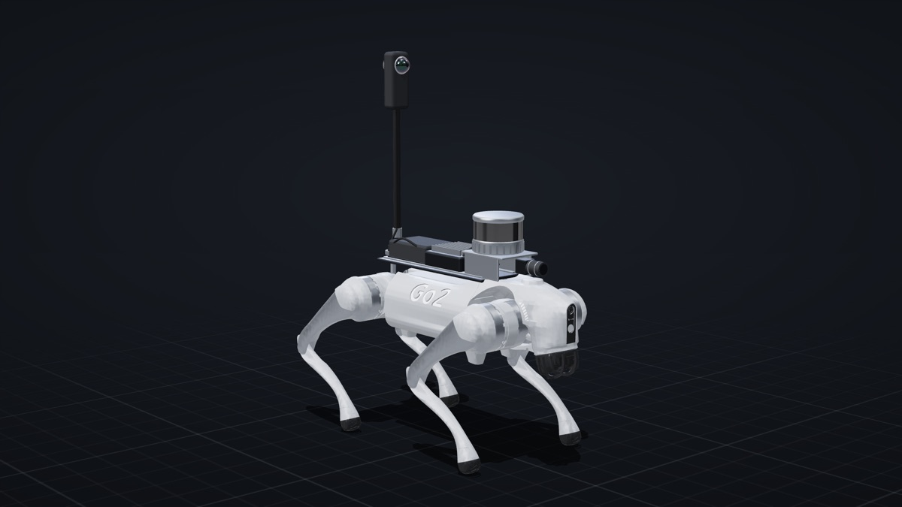
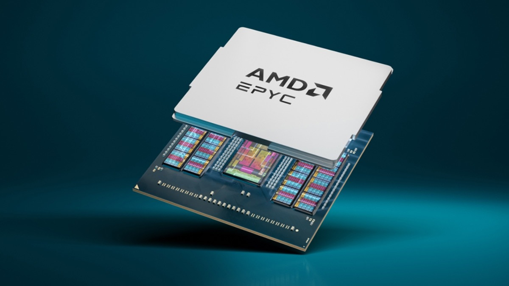
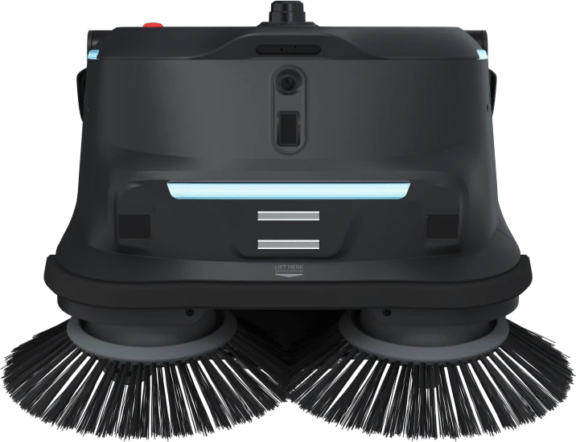

Agentic engineering, reality capture and a building operating system
Accelerate Robotics deploys and operates service-robot fleets in large hospitality and healthcare buildings. This program builds the four capabilities that operation runs on: a controlled platform for building software with AI agents, a system for capturing survey-grade 3D models of every building, the operating system that runs the building day to day, and the robot fleet that extends every team’s reach.
PRJ-01 The Brain is the agentic engineering platform: business-unit leads direct sandboxed AI agents against a central context store, with frontier models for aggressive development and local compute for sensitive material. PRJ-02 Site Capture is a quadruped-mounted mobile reality capture system; its data is processed on the Brain. PRJ-03 Hotel.OS connects staff, shift devices, robots and hotel systems through one task model, located on the Site Capture model. This workspace is the engineering record for all three.
| Doc | AR-PGM-001 |
| Rev | G · 2026-11-19 |
| Status | Procurement / Gen-0 |
| Workstreams | PRJ-01 · 02 · 03 · 04 |
From LiDAR capture to live operations: the program in one model. Drag to orbit. Procedurally generated building for illustration.
Engineering model
PRJ-01 · from unstructured AI-assisted coding to a controlled methodology.
Site Capture data pipeline
PRJ-02 acquisition to fleet maps, processed on PRJ-01. Joined by verified media, not a network link.
Mobile capture
- Carrier
- Unitree Go2 X (Gen-0)
- Sensors
- Survey LiDAR + IMU · 4K · 360° 5.7K30
- Logger
- Jetson Orin Nano Super · MCAP
- Time
- PTP master on logger
Survey tie-in
- Network
- Targets every 30–50 m
- Segments
- 15–20 min, open + close on control
- Custody
- SHA-256 manifest, 2 copies
Global optimisation
- SLAM
- GLIM / HBA offline
- Steps
- Merge · register · colourise
- Working set
- 4.5–9 TB on 15.36 TB NVMe
QA / QC
- Method
- Residuals vs independent checkpoints
- Spec
- USIBD LOA at 2σ (95%)
- Report
- Per-zone measured LOA
Fleet-ready outputs
- Cloud
- E57 / LAS / RCP
- Maps
- 2D occupancy + route graph
- Layers
- 360° tour · elevator/door inventory
Estimates (est.) are planning figures from the program research; they are replaced by measured values at the G1 pilot.
How the projects connect
Four separate projects, one loop: each one’s output is the next one’s input. Click a project or a hand-off.
Swim lanes
Each project runs in its own lane: its own team, vendors, plans and prototypes. Lanes meet only at the hand-offs marked ↗.
G0 rear-port access test; payload parts
Gen-0 rig, Gen-1 payload prototype
G1 pilot day: 5–10k m² zone, checkpoint RMSE
pilot data → BrainFull capture of The Grand (≈1M sq ft)
maps → RoboticsThesis capture; re-capture service
G0 order (EPS check)
Build, burn-in, agent platform and routing policy
Process pilot-day data
The Grand twin T2–T4 processed
twin → Hotel.OSNAS, GPU upgrade, multi-site
H0 scope, PMS access per operation
Twin viewer, GM console, task engine prototypes
P0 spine with first departments
P1 fleet dispatch on the twin at The Grand
dispatch → RoboticsP3 Thesis, multi-property
re-capture → Site CaptureA0 vendor API, FCC IDs, elevator survey
Rack and module prototypes, W3 wrap
A1 BOH pilot (W3, T300, CC1 Pro, MT1 Vac)
Fleet live at The Grand
status → Hotel.OSA3 scale; Thesis fleet
Workstreams
In flow order. One team, four specifications.
Accelerate Site Capture
Survey LiDAR, 4K and 360° imagery on a quadruped carrier, time-synchronised and logged on a Jetson Orin Nano Super. Segment-based SLAM tied to a survey control network for building-scale accuracy. Gen-0 carrier: Unitree Go2 X, air-gapped. Site #1: 1,000,000 sq ft (≈92,900 m²).

| Deliverables | Property digital twin (point cloud) · 360° walkthrough · floor & route maps for the fleet · elevator & door inventory · accuracy (QA) report |
|---|---|
| Accuracy | LOA20 (15–50 mm at 95%) building-wide with survey control (est.) · required LOA per client: TBD |
| Budget | Gen-0 procure ≈ $5,400 (est., verify before order) + survey control quote · Gen-1 payload by quote |
| Next gate | G1 Pilot day: capture rate (m²/h) + checkpoint RMSE on one 5,000–10,000 m² zone. G0 rear-port access test first. |
| Team | Accelerate program team |
The Brain
The company's controlled environment for agentic software engineering: central context brain, per-unit agent sandboxes, a model router that keeps confidential data on local compute, review gates and a full audit trail. Runs on a single-socket AMD EPYC 9175F node (16 Zen 5 cores, 128 GB ECC DDR5, RTX 5070 Ti, 15.36 TB U.3 NVMe), which also processes Site Capture jobs.

| Platform | EPYC 9175F · ASRock Rack TURIND8X-2T · SP5 |
|---|---|
| Budget | ≈ $14,037 all-in (Micro Center $9,063 incl. tax + Amazon drives ≈ $4,974) |
| Next gate | G0: EPS check (board 3× EPS vs PSU 2× EPS cables) + order before the price guarantee ends Thu Nov 19. Then G2: NAS ≥ 40 TB before the first client capture. |
| Team | Accelerate program team |
Hotel.OS
The runtime layer for an Accelerate property. Every square inch is mapped into a walkable digital twin (LiDAR geometry, 4K and 360° imagery, facilities floor plans) down to every switch and outlet. Tasks issued to a floor, room or object resolve to an exact location, and the general manager sees the whole building and everything happening in it. One task model, one integration bus and one AI engine connect seven hotel departments, rugged shift devices, multi-vendor robot fleets and the systems a hotel already runs (PMS, POS, CRM, access control, BI). Spaces and routes come from Site Capture; the platform is built on the Brain, and confidential guest data stays on local models.
| Digital twin | Capture → building model → object layer (switches, outlets, fixtures) → asset registry → operations map |
|---|---|
| Map actions | Walk the property, add, close out, tag team members, summon robots, deploy resources, GM view of the whole building |
| Devices | Sonim XP Pro Thermal · XP5plus 5G · MegaConnect · Rhino C65 · T105 |
| Fleet layer | Open-RMF fleet, door and lift adapters; vendor-neutral dispatch |
| Deployment | Cloud control plane + on-prem edge per property; ≥ 4 h offline continuity (target) |
| Sites | 1 · The Grand, Miami (condominium + Marriott and DoubleTree hotel operations + lobby retail) · 2 · Hilton Thesis Hotel, Miami |
| Next gate | H0: The Grand pilot scope, PMS access per hotel operation |
Robotics
Its own project and its own lane: Robotics selects, buys, deploys and maintains the robot fleet that augments every department: linen, luggage, supplies, waste, small-item delivery and overnight floor care. One wheel platform carries swappable payload modules; each robot navigates on its own LiDAR SLAM, and Hotel.OS assigns its work. The Keenon W3 is selected for small-item delivery and doubles as branded or sponsor-wrapped space.


| Selected | Keenon W3 · small items (toothbrushes, towels, snacks) · brand and sponsor wraps |
|---|---|
| Platform | Pudu T-series / Keenon S-series bases with linen, luggage, supply and waste modules |
| Floor care | Pudu MT1 Vac (carpet), CC1 Pro (stone, BOH), Keenon C55 (large hard floor) |
| Next gate | A0: vendor API in writing, FCC grant per model (pre-28 Jul 2026), elevator OEM interface |
Design constraints
Applied to every workstream from the first release.